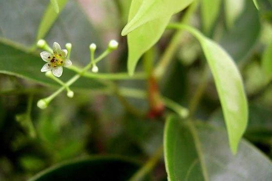
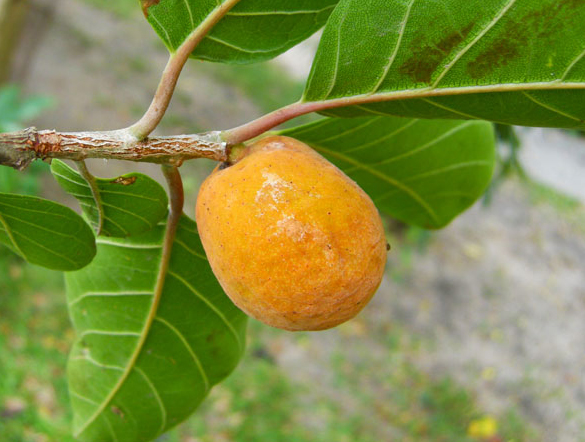
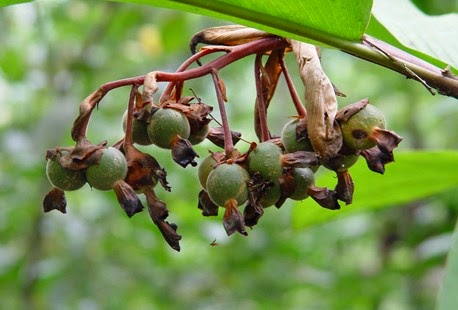
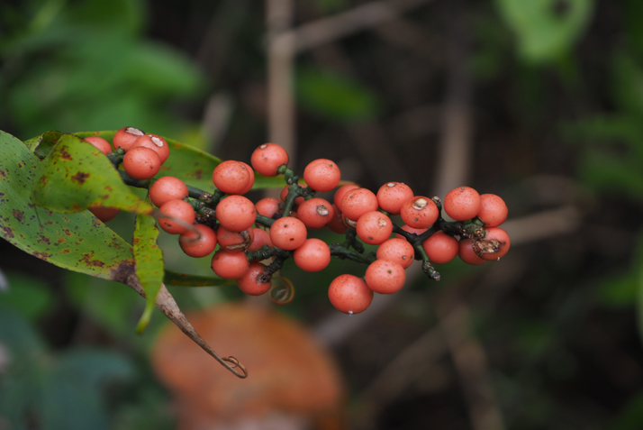

สมุนไพรไทย 22 ชนิดเสี่ยงสูญพันธุ์ ประกาศคุ้มครองและควบคุม 7 ชนิด
สธ. ประกาศรายชื่อ “สมุนไพรไทย” 22 ชนิดเสี่ยงสูญพันธุ์ เหตุเติบโตช้า เมื่อใช้ต้องใช้ทั้งต้น หรือทั้งราก หรือใช้บ่อยจึงรักษาได้ คัดเลือกสมุนไพร 7 ชนิด ออกประกาศคุ้มครองและควบคุม ผู้ครอบครองต้องแจ้งจำนวนที่มี เพื่อทำแผนการใช้และการปลูกทดแทน
นายนันทศักดิ์ โชติชนะเดชาวงศ์ ผู้อำนวยการกองคุ้มครองภูมิปัญญาการแพทย์แผนไทยและพื้นบ้านไทย กรมพัฒนาการแพทย์แผนไทยและการแพทย์ทางเลือก กระทรวงสาธารณสุข (สธ.) กล่าวว่า ขณะนี้มีสมุนไพรไทย 22 ชนิด ที่เสี่ยงอาจจะสูญพันธุ์ได้ ประกอบด้วย 1. ถั่วดินโคก 2. เทพทาโร 3. มะตูมนิ่ม 4. มะหาด 5. เร่ว 6. หัวร้อยรู 7. กระทุ่มนา 8. ขันทองพยาบาท 9. จุกโรหินี 10. ชะเอมไทย 11. ชิงชี่ 12. ตับเต่า 13. นางแย้มป่า 14. ปลาไหลเผือก 15. พังคี 16. มะคังแดง 17. สะค้าน 18. สารภีป่า 19. อบเชยไทย 20. เฉียงพร้านางแอ 21. เถาเอ็นอ่อน และ 22. เปราะหอม
นายนันทศักดิ์ กล่าวว่า คณะกรรมการคุ้มครองและส่งเสริมภูมิปัญญาการแพทย์แผนไทยได้ประชุมหารือกัน โดยเลือกสมุนไพร 6 ชนิดจาก 22 ชนิดขึ้นมา คือ ถั่วดินโคก หรือ พิษนาศน์ เทพทาโร มะตูมนิ่ม มะหาด เร่ว และ หัวร้อยรู นอกจากนี้ ยังเสนอสมุนไพร “กระวาน” ขึ้นมาเป็นพิเศษด้วยอีกชนิดหนึ่ง เพื่อประกาศคุ้มครองและเป็นสมุนไพรที่ต้องควบคุม โดยหากใครมีสมุนไพร 7 ตัวนี้อยู่ในครอบครองไม่ได้ถือว่ามีความผิด เพียงแต่ต้องแจ้งมาทาง สธ. ให้รับทราบว่ามีอยู่เท่าใด เพื่อที่จะจัดทำแผนส่งเสริมการปลูกต่อไป เช่น บริษัทใดมีสมุนไพร 7 นี้อยู่ ใช้ผลิตยาไปเท่าใด ต้องปลูกทดแทนเท่าใด เพื่อไม่ให้สูญพันธุ์ เป็นต้น
และต่อไปคือรายละเอียดเกี่ยวกับสมุนไพรไทยที่ประกาศคุ้มครอง
1.ถั่วดินโคก
หรือต้นพิษนาศน์เป็นสมุนไพรพื้นบ้านที่คนภาคอีสานรู้จักกันเป็นอย่างดี มีสรรพคุณใช้แก้พิษและบำรุงน้ำนมสำหรับสตรีหลังคลอด
ถั่วดินโคกจัดอยู่ในพืชตระกูลถั่ว ชื่อวิทยาศาสตร์ของพิษนาศน์ คือ Sophora exigua Craib มีชื่อเรียกอื่นๆหลากหลาย เช่น ถั่วดินโคก แผ่นดินเย็น นมราชสีห์ พิษนาท นมฤาษี เป็นต้น ต้นพิษนาศน์ มีสารสำคัญที่มีฤทธิ์ต้านเชื้อแบคทีเรีย คือ เชื้อ Pseudomonas aeruginosa, Salmonella typhimurium และ Staphylococcus epidermidisn ใช้ในการแก้พิษต่างๆได้ เป็นยาสมุนไพรพื้นบ้านที่คนภาคอีสานรู้จักกันเป็นอย่างดี
ลักษณะของต้นพิษนาศน์ จะเป็นพรรณไม้ทรงพุ่มขนาดเล็กที่จัดอยู่ในวงศ์ของถั่ว ไม้ล้มลุก สามารถการขยายพันธุ์โดยการเพาะเมล็ดพันธ์ สามารถเจริญเติบโตได้ดีในดินร่วนซุยที่มีความอุดมสมบูรณ์ ชอบความชื้น ลักษณะของต้นพิษนาศน์ มีรายละเอียดดังนี้
- ลำต้นพิษนาศน์ ลักษณะลำต้นสั้น แผ่กิ่งก้านรอบๆลำต้น ความสูงประมาณ 1 ฟุต
- ใบพิษนาศน์ ใบประกอบแบบขนนก ออกเรียงสลับกันเป็นคู่ๆ ในแต่ละก้านจะประกอบไปด้วยใบย่อยทรงรี
- ดอกพิษนาศน์ ดอกออกเป็นช่อ คล้ายดอกถั่ว มีกลีบดอกสีม่วงเข้ม ออกดดอกบริเวณปลายยอด
- ผลพิษนาศน์ ลักษณะผลเป็นฝัก มีขนสีขาวปกคลุมอยู่ทั่วฝัก
สรรพคุณของต้นพิษนาศน์ มีดังนี้
- รากพิษนาศน์ สรรพคุณเป็นยาลดไข้ แก้พิษงู รักษาฝี เป็นยาบำรุงน้ำนมสำหรับสตรีหลังคลอดบุตร
- ใบหง้าพิษนาศน์ และใบพิษนาศน์ สรรพคุณรักษาแผลฝี
- ใบพิษนาศน์ สรรพคุณรักษาแผลฝี
- ผลพิษนาศน์ ลักษณะผลเป็นฝัก มีขนสีขาวปกคลุมอยู่ทั่วฝัก
 แหล่งที่มา: FongZa.com
แหล่งที่มา: FongZa.com
2.เทพทาโรร
เทพทาโร มีต้นขนาดใหญ่ อยู่ในวงศ์ Lauraceae พบในเอเชียใต้ถึงตะวันออก และเป็นพันธุ์ไม้มงคลพระราชทานประจำจังหวัดพังงา
เทพทาโรมีชื่อวิทยาศาสตร์คือ Cinnamomum porrectum (Roxb.) Kostern ในประเทศไทยสามารถพบเทพทาโรได้ทั่วทุกภาคในประเทศ โดยจะพบขึ้นกระจัดกระจายเป็นกลุ่มบนเขาในป่าดงดิบที่มีความสูงจากระดับน้ำทะเล 0-800 เมตร แต่จะพบมากในภาคใต้ ทั้งนี้เทพทาโรยังเป็นไม้พื้นเมืองที่เก่าแก่ของไทยโดยพบหลักฐานอ้างอิงครั้งแรกในสมัยสุโขทัยดังปรากฏ ในไตรภูมิพระร่วง ซึ่งได้กล่าวถึงพรรณพืชหอมในอุตตรภูรูทวีปที่ประกอบด้วย จาง จันทร์ กฤษณา คันธา เป็นต้น
เทพทาโรจัดเป็นไม้ยืนต้นขนาดกลางถึงใหญ่ สูง 10-30 เมตร ไม่ผลัดใบหรือผลัดใบระยะสั้น เรือนยอดสีเขียวเข้มโปร่งถึงเป็นพุ่มกลมทึบลำต้นเรียบไม่มีพูพอน เปลือกต้นสีเทาอมเขียว หรือเทาอมน้ำตาล แตก เป็นร่องตามยาวลำต้น โดยมีลักษณะส่วนต่างๆ ดังนี้
- มีลักษณะเป็นต้นกลางถึงใหญ่ สูง 10-30 เมตร
- กิ่งมีลักษณะอ่อนเรียว เกลี้ยง และมักมีคราบขาวเนื้อไม้มีสีเทาแกมน้ำตาล มีกลิ่นหอมฉุน มีริ้วสีเขียวแกมเหลือง
- ใบ เป็นใบเดี่ยว ดอกออกตรง กันข้าม เรียงแบบเวียนสลับ มีลักษณะรูปรีแกมรูปไข่ หรือรูปไข่แกมรูปขอบขนาน ผิวใบเกลี้ยง เนื้อใบค่อนข้างหนา ใบกว้างประมาณ 2.5-6 เซนติเมตร ยาวประมาณ 5-20 เซนติเมตร ท้องใบมีนวลขาวอมเทา ใบอ่อนสีเขียว ใบแก่มีสีแดง มีเส้นใบหลัก 1 เส้น เส้นใบข้างโค้ง 3-7 คู่ นูนขึ้นทั้งสองด้าน ปลาบใบแหลม โคนใบสอบถึงมน ก้านใบเล็กเรียว สีเขียวอ่อน เขียวอมเหลืองหรือแดง ยาวประมาณ 1.2-3.5 เซนติเมตร
- ดอก ออกเป็นช่อกระจุกคล้ายร่มยาวประมาณ 2.5-10 เซนติเมตร และใน 1 ช่อจะมีดอกย่อยประมาณ 13-14 ดอก มีขนาดเล็ก โดยจะออกตามปลายกิ่ง กลีบดอกมีลักษณะเป็นรูปไข่ มี 6 กลีบ สีขาวอมเขียวหรือสีเหลืองอ่อน ภายในดอกมีขนเล็กน้อย ดอกมีเกสรเพศผู้ 9 อัน ส่วนก้านช่อดอกมีลักษณะ เรียวมีความยาวประมาณ 5-6 เซนติเมตร
- ผล ออกเป็นพองมีขนาดเล็กเกลี้ยง ทรงกลมหรือไข่กลับ เส้นผ่านศูนย์กลางยาวประมาณ 7-8 มิลลิเมตร มีกลิ่นหอม ผลอ่อนมีสีเขียว เมื่อแก่มีสีม่วงดำ ก้านผลเรียวยาวประมาณ 3-5 เซนติเมตร ที่ขั้วมีกลีบเลี้ยงรูปถ้วย ไม่มีซี่หยักติดอยู่
สรรพคุณของเทพทาโร มีดังนี้
- เปลือกต้นไม้ มีน้ำมันระเหย 1-25 % และแทนนิน แก้ลมจุกเสียด แน่นเฟ้อ แก้ปวดท้อง ขับลมในลำไส้และกระเพาะอาหาร บำรุงธาตุ
- ใบ ใช้ปรุงเป็นยาหอมแก้ลม จุกเสียดแน่นเฟ้อ แก้อาการปวดท้อง ขับผายลมได้ดี ขับลมในลำไส้และกระเพาะอาหารให้เรอ เป็นยาบำรุงธาตุ ขับเสมหะ
- เมล็ด จะให้น้ำมัน ใช้เป็นยาทาถูนวด แก้ปวด

แหล่งที่มา: disthai.com
3.มะตูมนิ่ม
มะตูมนิ่ม เป็นไม้ผลอีกหนึ่งชนิดที่เป็นทั้งไม้ผลและสมุนไพร ซึ่งเป็นส่วนประกอบที่สำคัญของ ตำรับยาลูกแปลกแม่ คนโบราณถือว่ามะตูมนิ่มเป็นยาอายุวัฒนะอีกด้วย
ต้นมะตูมนิ่ม ชื่อภาษาอังกฤษและชื่องทางวิทยาศาสตร์ว่า Aegle marmelos พบเห็นทั่วไปในโซนเอเชียตะวันออกใต้ เป็นต้รไม้หรือไม้ผลอีกชนิดหนึ่งซึ่งปัจจุบันนี้ค่อนข้า่งที่จะหายากเพราะเป็นไม้โบราณ
ต้นมะตูมนิ่ม มีลำต้นค่อนข้างสูง ประมาณ 10-14เมตร ปลูกขึ้นได้ทุกสภาพดินถือเป็นไม้ผลทนแล้งอีกชนิดหนึ่ง โดยมีลักษณะส่วนต่างๆ ดังนี้
- โคนต้นและกิ่งก้านมีหนามแหลม ยาว แข็ง ออกเดี่ยวหรือเป็นคู่ตามกิ่ง
- ใบประกอบแบบขนนก ใบย่อยรูปไข่หรือรูปหอกมี 3 ใบ มองดูคล้ายตรีศูลของพระศิวะ ดอกสีขาวหรือขาวอมเขียว มีกลิ่นหอม
- ผลมีเปลือกแข็งเรียบและมีเส้นผ่านศูนย์กลาง 5-15 เซนติเมตร บางผลมีเปลือกแข็งมากจนต้องกระเทาะเปลือกออกโดยใช้ค้อนทุบ เนื้อผลเหนียวข้น มีกลิ่นหอม และมีเมล็ดจำนวนมากแทรกอยู่ในเนื้อผล โดยเมล็ดจะมีขนหนาปกคลุม
สรรพคุณของมะตูมนิ่ม มีดังนี้
- ผลสุกสามารถนำมาใช้เป็นยาระบายได้
- เปลือกรากและลำต้นจะช่วยแก้อาการไข้จับสั่น
- ใบสดนำมาคั้นเอาน้ำ ใช้แก้หวัด
 แหล่งที่มา: medthai.com
แหล่งที่มา: medthai.com
4.มะหาด
มะหาด ชื่อวิทยาศาสตร์ Artocarpus lacucha Buch.-Ham จัดอยู่ในวงศ์ขนุนเป็นไม้ยืนต้นขนาดใหญ่ไม่ผลัดใบ
มะหาดมีลักษณะส่วนต่างๆ ดังนี้
- ต้นมีความสูงของต้นประมาณ 15-20 เมตร และอาจสูงได้ถึง 30 เมตร ลำต้นมีลักษณะเปลาตรง ทรงพุ่มกลมหรือแผ่กว้าง เปลือกลำต้นเป็นสีดำ สีเทาแกมน้ำตาล หรือสีน้ำตาลอมแดงถึงน้ำตาลเข้ม ต้นแก่ผิวเปลือกจะค่อนข้างหยาบ ขรุขระและแตกเป็นสะเก็ดเล็ก ๆ
- ใบเป็นใบเดี่ยว ออกเรียงสลับในระนาบเดียวกัน ลักษณะของใบเป็นรูปรี รูปไข่ หรือรูปขอบขนาน ปลายใบมนหรือแหลมเป็นติ่งแหลม โคนใบมนหรือเว้ามนหรือแหลมกว้าง และอาจเบี้ยวไม่สมมาตรกัน ส่วนขอบใบเรียบเป็นคลื่นเล็กน้อยหรือมีซี่ฟันเล็กน้อย ใบมีขนาดกว้างประมาณ 5-20 เซนติเมตร และยาวประมาณ 10-30 เซนติเมตร ก้านใบยาวประมาณ 2-3 เซนติเมตร มีขนแข็งสีเหลืองอยู่หนาแน่น และมีหูใบขนาดเล็กบาง รูปหอกหลุดร่วงง่ายและมีขนปกคลุมหนาแน่น ขนาดประมาณ 4-5 เซนติเมตร ส่วนกิ่งก้านค่อนข้างอ่อน อ้วน และหนาประมาณ 3-6 มิลลิเมตร
- ดอกอกดอกเป็นช่อกระจุกแน่นกลมสีเหลืองหม่นถึงสีชมพูอ่อน โดยจะออกตามซอกใบ ดอกเป็นแบบแยกเพศอยู่ในต้นเดียวกัน แต่อยู่คนละช่อ ช่อดอกเพศผู้กลม ช่อยาวประมาณ 0.8-2 เซนติเมตร ออกดอกเป็นช่อเดี่ยวตามซอกหรือช่วงล่างของกิ่งก้าน โคนเชื่อมติดกันเป็นหลอด
- ผลเป็นสดและมีเนื้อ เป็นผลรวมสีเหลือง ลักษณะของผลเป็นรูปทรงกลมค่อนข้างบิดเบี้ยวเป็นตะปุ่มตะป่ำ ผลมีขนาดเส้นผ่านศูนย์กลางประมาณ 5-8 เซนติเมตร ก้านผลยาวประมาณ 1.2-3.8 เซนติเมตร ผิวผลขรุขระและมีขนนุ่มคล้ายกำมะหยี่ ผลอ่อนเป็นสีเขียว พอสุกจะเปลี่ยนเป็นสีเหลืองอ่อนถึงส้ม
สรรพคุณของมะหาด มีดังนี้
- แก่นมะหาดมีรสร้อน มีสรรพคุณเป็นยาแก้กระษัย ละลายเลือด กระจายโลหิต แก้ดวงจิตขุ่นมัว ระส่ำระสาย แก้อาการนอนไม่หลับ เป็นยาแก้ลม
- เปลือกต้นสดนำมาต้มกับน้ำกินเป็นยาแก้ไข้ หรือจะใช้รากสดหรือแห้ง นำมาต้มกับน้ำกินเป็นยาแก้ไข้ก็ได้ (เปลือกต้น,ราก) แก่นมีรสร้อน สรรพคุณเป็นยาแก้ไข้ต่าง ๆ
- รากมะหาดสดหรือแห้งนำมาต้มกับน้ำกินเป็นยาแก้พิษร้อนใน (ราก)

แหล่งที่มา: medthai.com
5.เร่ว
เร่วชื่อวิทยาศาสตร์ Amomum villosum var. xanthioides (Wall. ex Baker) T.L.Wu & S.J.Chen ต้นเร่ว จัดเป็นพืชล้มลุก มีเหง้าหรือลำต้นอยู่ใต้ดิน เป็นพืชที่เจริญเติบโตได้ดีในดินทุกชนิด โดยเฉพาะในดินร่วนซุยในที่ร่มรำไร นิยมขยายพันธุ์ด้วยวิธีการใช้เหง้าหรือหน่อมากกว่าการใช้เมล็ด ในประเทศไทยสามารถพบได้ทางภาคอีสาน ภาคเหนือ และภาคกลาง
- เร่วน้อย มีชื่อวิทยาศาสตร์ว่า Amomum villosum Lour. มีชื่อท้องถิ่นอื่น ๆ ว่า เร่ว, เร่วดง เป็นต้น โดยผลเร่วน้อยที่มีคุณภาพดีนั้นต้องมีลักษณะของผลใหญ่ แข็ง มีเนื้อมาก เนื้อในเมล็ดมีสีน้ำตาลแดง และมีกลิ่นหอมฉุนมาก
- เร่วใหญ่ มีชื่อวิทยาศาสตร์ Amomum xanthioides Wall. ex Baker มีชื่อท้องถิ่นอื่น ๆ ว่า เร่ว, เร่วกระวาน, กระวานป่า, หมากแหน่ง, มะอี้, หมากอี้, หมากเน็ง เป็นต้น โดยผลเร่วใหญ่ที่มีคุณภาพดีนั้นต้องมีลักษณะผลใหญ่ แข็ง มีสีเทา เนื้อในมีสีน้ำตาลอมเทาถึงสีน้ำตาล และมีกลิ่นหอมฉุน
มะหาดมีลักษณะส่วนต่างๆ ดังนี้
- ใบเร่ว เป็นใบเดี่ยว ออกเรียงสลับ ผิวใบสีเขียวเข้มเป็นมัน ลักษณะของใบเรียวยาว เป็นรูปขอบขนานหรือรูปขอบขนานแกมใบหอก มีความยาวประมาณ 12-20 เซนติเมตรและกว้างประมาณ 4-7 เซนติเมตร ปลายใบแหลมและห้อยโค้งลง ก้านใบเป็นแผ่นมีขนาดสั้น
- ใบเป็นใบเดี่ยว ออกเรียงสลับในระนาบเดียวกัน ลักษณะของใบเป็นรูปรี รูปไข่ หรือรูปขอบขนาน ปลายใบมนหรือแหลมเป็นติ่งแหลม โคนใบมนหรือเว้ามนหรือแหลมกว้าง และอาจเบี้ยวไม่สมมาตรกัน ส่วนขอบใบเรียบเป็นคลื่นเล็กน้อยหรือมีซี่ฟันเล็กน้อย ใบมีขนาดกว้างประมาณ 5-20 เซนติเมตร และยาวประมาณ 10-30 เซนติเมตร ก้านใบยาวประมาณ 2-3 เซนติเมตร มีขนแข็งสีเหลืองอยู่หนาแน่น และมีหูใบขนาดเล็กบาง รูปหอกหลุดร่วงง่ายและมีขนปกคลุมหนาแน่น ขนาดประมาณ 4-5 เซนติเมตร ส่วนกิ่งก้านค่อนข้างอ่อน อ้วน และหนาประมาณ 3-6 มิลลิเมตร
- ดอกเร่ว ดอกมีสีขาว ออกเป็นช่อจากยอดที่แทงขึ้นมาจากเหง้า ดอกจะรวมอยู่ในก้านเดียวกันเป็นช่อยาว ๆ คล้ายกับดอกข่า กลีบดอกเป็นสีชมพูอ่อนแล้วจะเปลี่ยนสีน้ำตาลเทา โคนกลีบดอกจะเชื่อมติดกันเป็นท่อ ปลายแยกเป็นกลีบ ก้านช่อดอกสั้น
- ผลเร่วน้อย ผลค่อนข้างกลม ลักษณะเป็น 3 พู มีขนาดเส้นผ่านศูนย์กลางประมาณ 1-1.5 เซนติเมตรและยาวประมาณ 1.5-2 เซนติเมตร มีขน ผลแก่สีน้ำตาลแดง ภายในมีเมล็ดจำนวนมากจับกันเป็นกลุ่มก้อนกลม ๆ หรือกลมรี มี 3 พู โดยแต่ละพูจะมีเมล็ดประมาณ 3-15 เมล็ด อัดเรียงกันแน่น 3-4 แถว เมล็ดมีรูปร่างไม่แน่นอน มีหลายเหลี่ยมและมีเป็นสันนูน ขนาดกว้างประมาณ 2-3 มิลลิเมตร และยาวประมาณ 2.5-4 เซนติเมตร เมล็ดมีสีน้ำตาลเข้มหรือสีน้ำตาลดำ ผิวด้านนอกเรียบมีเยื่อบางหุ้ม ปลายแหลมของเมล็ดมีรูเห็นได้เด่นชัด เมล็ดแข็ง เนื้อในเมล็ดมีสีขาวอมเหลือง มีกลิ่นหอมฉุน รสเผ็ดซ่า และมีรสขมเล็กน้อย
- ผลเร่วใหญ่ ผลมีลักษณะเรียวยาวหรือขอบขนานแกมสามเหลี่ยม มีขนาดเส้นผ่านศูนย์กลางประมาณ 2 เซนติเมตร ผลแห้งแตกได้ มีขนสีน้ำตาลแดงปกคลุมอยู่ ผลมีรสมันเผื่อนติดเปรี้ยว ภายในผลมีเมล็ดเป็นกลุ่ม 10-20 เมล็ด ลักษณะเหมือนเร่วน้อย เมล็ดมีสีน้ำตาลเข้ม มีกลิ่นหอม มีรสร้อนเผ็ดปร่า
สรรพคุณของมะตูมนิ่ม มีดังนี้
- ผลหรือเมล็ดจากผลที่แก่จัดใช้เป็นยาแก้ท้องขึ้น ท้องอืด ท้องเฟ้อ จุกเสียดแน่นท้อง แก้เสมหะในลำคอ
- ช่วยแก้อาการปวดท้อง ด้วยการใช้เมล็ดเร่วผสมกับหัวแห้วหมู ขิงแห้ง และชะเอมเทศ นำมาปรุงเป็นยารับประทาน
- ช่วยแก้เสมหะอันบังเกิดแต่ดี

แหล่งที่มา: medthai.com
6.หัวร้อยรู
หัวร้อยรู มีชื่อทางวิทยาศาสตร์ Hydnophytum formicarium Jack. เป็นพืชจำพวกหัว ที่อาศัยเกาะตามต้นไม้อื่น ต้นแก่มีหัวกลมโตขนาดเท่าลูกมะพร้าวห้าว ภายในหัวเป็นรูย้อนขึ้น ย้อนลง พรุนไปทั่ว เมื่อผ่าออกดู มักมีมดดำอาศัยอยู่เต็มหัว ต้องนำมาแช่น้ำทิ้งไว้จนกว่ามดจะออกไปหมด เนื้อนิ่ม สีน้ำตาลไหม้ มักขึ้นตามคาคบไม้ หัวมีรสเมา
หัวร้อยรูมีลักษณะส่วนต่างๆ ดังนี้
- ลำต้นสูง 30-60 เซนติเมตร โคนต้นขยายใหญ่เป็นรูปกลมป้อมหรือเป็นพู มีลำต้นอวบน้ำ
- ใบหัวร้อยรู มีใบเป็นใบเดี่ยวออกตรงข้ามกัน โคนใบสอบ ปลายใบมน แผ่นใบหนาเรียบเนียน อวบน้ำ ใบกว้างประมาณ 2-7 เซนติเมตรและยาวประมาณ 4-15 เซนติเมตร ผิวใบเรียบเกลี้ยงทั้งสองด้าน มีเส้นแขนงใบประมาณ 5-7 คู่เห็นไม่เด่นชัด ส่วนก้านใบสั้น ยาวประมาณ 2-5 มิลลิเมตร ส่วนหูใบเล็ก ลักษณะเป็นรูปไข่
-
- ดอกหัวร้อยรู ออกดอกเดี่ยวเป็นกระจุกอยู่ตามง่ามใบและรอบข้อประมาณ 2-5 ดอก ดอกมีขนาดเล็ก ไม่มีก้านดอก กลีบดอกสีขาว กลีบดอกมี 4 แฉก เชื่อมติดกันเป็นหลอดไม่มีก้านชูอับเรณู และจะออกดอกในช่วงเดือนกุมภาพันธ์ถึงเดือนพฤษภาคม
- ผลหัวร้อยรู ลักษณะของผลเป็นรูปรี ผลสีเขียวและมีขนาดเล็กมาก มีขนาดกว้างประมาณ 3-4 มิลลิเมตรและยาวประมาณ 5-7 มิลลิเมตร ผลอ่อนเป็นสีเขียว เมื่อสุกแล้วจะเปลี่ยนเป็นสีแดงสดใส
สรรพคุณของมะหาด มีดังนี้
- ว่านหัวร้อยรูช่วยบำรุงหัวใจ ช่วยขับชีพจร
- ใช้เป็นยารักษาเบาหวาน
- หัวช่วยแก้อาการปวดเข่า แก้ข้อเข่า แก้ข้อเท้าปวดบวม ใช้เป็นยาแก้พิษในข้อกระดูกหรือโรคกระดูกที่มีอาการเจ็บปวด กระดูกเปราะ ผิวหนังเป็นจ้ำ มีผื่น อาจจะเป็นแผลกินลึกถึงกระดูกได้

แหล่งที่มา: medthai.com
7.กระวาน
กระวาน ชื่อวิทยาศาสตร์ Amomum verum Blackw กระวานจัดเป็นเครื่องเทศที่มีราคาแพง ที่ซื้อขายในประเทศไทยมีอยู่ด้วยกัน 2 ชนิด คือ
- กระวานไทย หรือ กระวาน (Amomum krevanh) ผลจะมีลักษณะค่อนข้างกลม ปลูกมากในทวีปเอเชียตะวันออกเฉียงใต้ ได้แก่ ประเทศอินโดนีเซีย หมู่เกาะอินเดียตะวันตก สำหรับประเทศไทยแหล่งผลิตสำคัญจะเก็บได้จากตามป่าบริเวณเขาสอยดาว ในจังหวัดจันทบุรี
- กระวานเทศ หรือ กระวานแท้ (Elettaria cardamomum) ผลมีลักษณะแบนรี ซึ่งแตกต่างจากกระวานไทย กระวานเทศนี้จะปลูกมากในประเทศอินเดีย ศรีลังกา
กระวานมีลักษณะส่วนต่างๆ ดังนี้
- ต้นกระวาน จัดเป็นไม้ล้มลุกมีเหง้า มีความสูงประมาณ 2 เมตร โดยมีกาบใบหุ้มซ้อนกันทำให้ดูคล้ายลำต้น โดยต้นกระวานมักขึ้นในที่ร่มหรือใต้ร่มไม้ที่มีความชื้นสูง หรือในที่ที่มีฝนตกชุกและอยู่สูงจากระดับน้ำทะเลอย่างน้อย 800 ฟุตขึ้นไป โดยมักจะพบขึ้นทั่วไปตามไหล่เขาในบริเวณป่าดงดิบ
- ใบกระวาน ใบเป็นใบเดี่ยว ลักษณะของใบแคบและยาว เป็นรูปขอบขนาน มีความยาวประมาณ 15-25 เซนติเมตร ปลายใบแหลม
- ผลมีเปลือกแข็งเรียบและมีเส้นผ่านศูนย์กลาง 5-15 เซนติเมตร บางผลมีเปลือกแข็งมากจนต้องกระเทาะเปลือกออกโดยใช้ค้อนทุบ เนื้อผลเหนียวข้น มีกลิ่นหอม และมีเมล็ดจำนวนมากแทรกอยู่ในเนื้อผล โดยเมล็ดจะมีขนหนาปกคลุม
- ผลกระวาน หรือ ลูกกระวาน ผลมีลักษณะค่อนข้างกลม ติดเป็นพวงราว 10-20 ผล ผลมีสีขาวนวล เปลือกผิวเกลี้ยง มองเห็นเป็นพู มี 3 พู ผลอ่อนมีขน ผิวเปลือกมีริ้วตามยาว เรียงตัวจากฐานไปสู่ยอด ผลมีขนาดเส้นผ่านศูนย์กลางประมาณ 10 มิลลิเมตรและยาวประมาณ 6-15 มิลลิเมตร ทั้งหัวและท้ายผลมีจุก ผลจะร่วงไปเมื่อแก่ ผลแก่จะแตก มีเมล็ดอยู่ภายในจำนวนมาก แบ่งเป็น 3 กลุ่ม มีเมล็ดกลุ่มละประมาณ 12-18 เมล็ด
- เมล็ดกระวาน เมล็ดอ่อนมีสีขาวและมีเยื่อหุ้ม เมื่อแก่แล้วจะเปลี่ยนเป็นสีดำหรือสีน้ำตาลไหม้ โดยทั้งผลและเมล็ดจะมีกลิ่นหอมเฉพาะตัว คล้ายกับกลิ่นของการบูร มีรสเผ็ดและเย็น
สรรพคุณของกระวาน มีดังนี้
- ช่วยบำรุงธาตุในร่างกาย
- ช่วยแก้ธาตุพิการ
- ช่วยทำให้เจริญอาหาร
- ช่วยแก้เสมหะให้ปิดธาตุ
- ช่วยบำรุงโลหิตในร่างกาย
 แหล่งที่มา: medthai.com
แหล่งที่มา: medthai.com